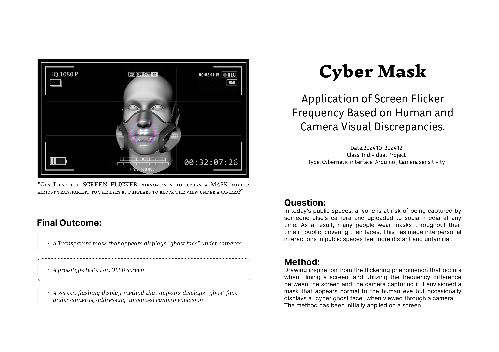
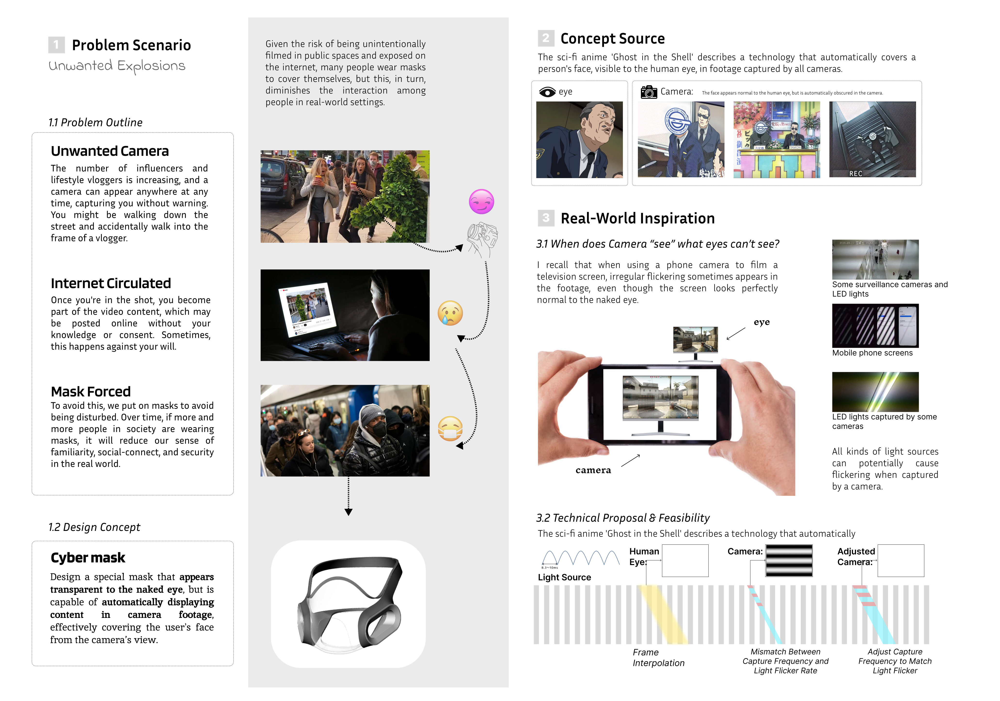
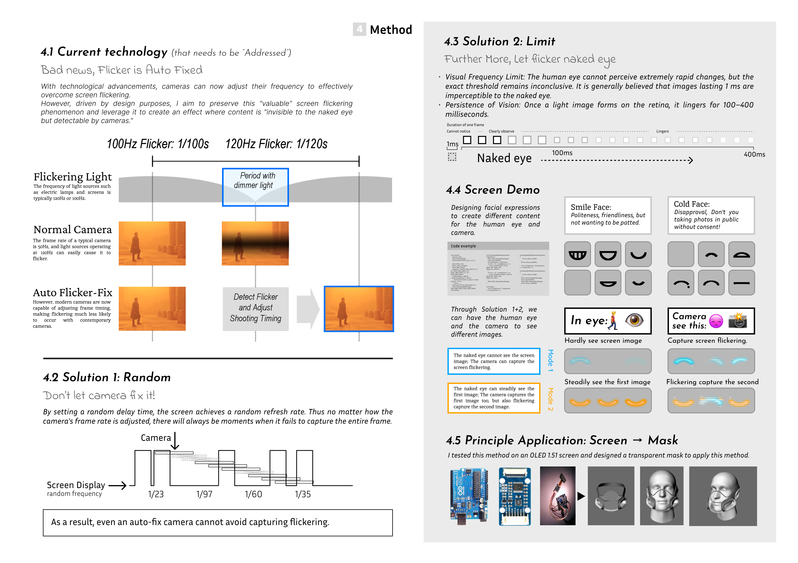

Development · 2024
Cyber Mask
Application of screen flicker frequency based on human and camera visual discrepancies.
Background
In today's public spaces, anyone is at risk of being captured by someone else's camera and uploaded to social media at any time. As a result, many people wear masks throughout their time in public, covering their faces. This has made interpersonal interactions in public spaces feel more distant and unfamiliar.
Method
Drawing inspiration from the flickering phenomenon that occurs when filming a screen, and utilizing the frequency difference between the screen and the camera capturing it, I envisioned a mask that appears normal to the human eye but occasionally displays a "cyber ghost face" when viewed through a camera. The method has been initially applied on a screen, and later can be adapted onto a mask product.


